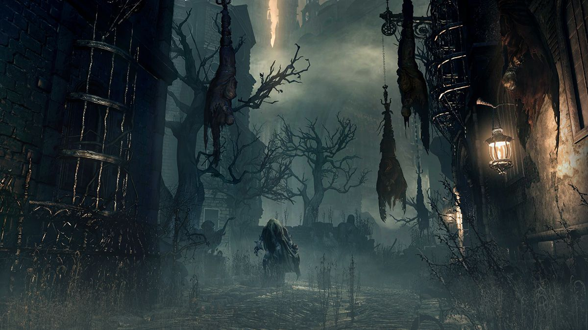
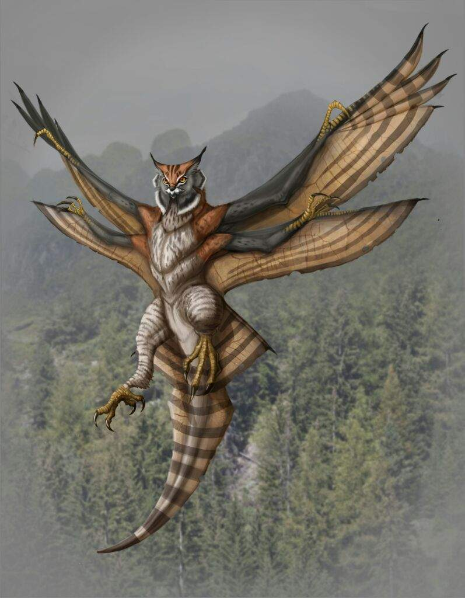
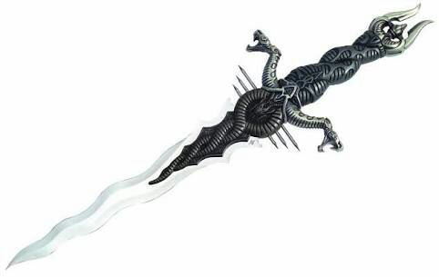
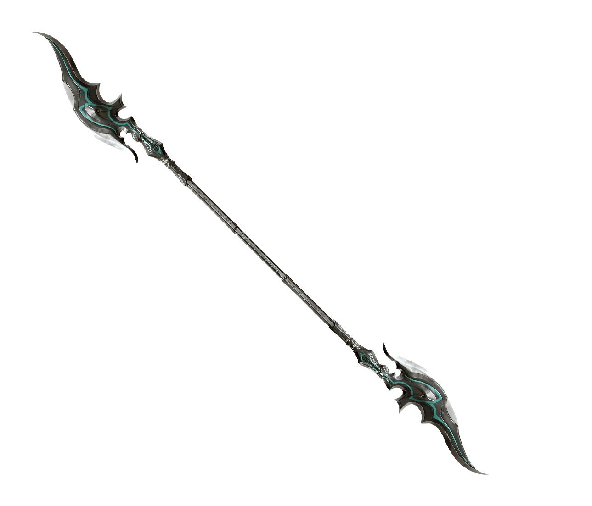
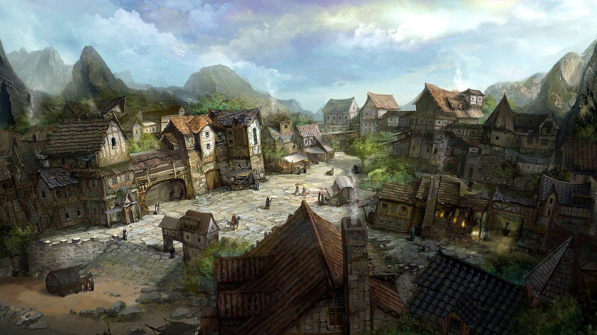

Capitulo 2
Tempo se passou após a primeira jornada dos exilados, até que. Chegaram em um vilarejo abandonado, onde boa parte estava queimado pelo fogo e definhado com resto mortais.

-Scarlett: Eu consigo sentir suas almas gritando, agonia e dor é tudo que eu sinto o que aconteceu aqui?
-Elinthy: Guerra, veja os sinais, as pisadas vieram do norte, olhe as casas queimaram e colocaram o povo reunido, as pegadas de sangue, mataram a maioria ali.
-Hiroki: Não é atoa que que Miratry é conhecido como Vale das Almas mortas.
-Rinorí: Isso foi literalmente um massacre, olha isso são brinquedos, haviam crianças aqui!
No meio de toda essa tensão. Scarlett começou a chorar, a pressão era tão grande que a fez desmaiar.
-Hiroki: SCARLETT! Por favor acorde, não desmaie agora!
A terra começou a rachar, e dividiu o vilarejo ao meio por uma faixa preta brilhante vindo de dentro do solo
-Elinthy: Vamos para aquela casa, eu vou carregar Scarlett, vão agora!
-Rinorí: Vamos pessoal não podemos perder tempo.
Todos entraram em uma casa que não estava tão queimada no vilarejo, Elinthy deitou Scarlett na cama, e Hiroki disse:
-Hiroki: Vamos montar uma barricada na porta, caso algo tente passar podemos ganhar tempo, pra fazer algo.
-Rinorí: Tem razão, tranque todas as janelas também
Rinorí invocou uma beast-leostrix, para que guardasse a frente da casa, pelo lado de fora, pois seus poderes já estavam bem drenados, pegaram todos os móveis que tinha na casa e montaram uma barricada na porta, trancaram as janelas, so ouviam o vento rugindo forte, causando preocupação em todos,
Scarlett ainda desmaiada em uma cama pequena, Elinthy, Rinorí e Hiroki aguardavam o retorno do bestiário, andando de um lado para o outro.

-Hiroki: Eu nao sei mais o que podemos fazer já estamos aqui a dias nesse vale e qual o propósito? nao consigo entender
- Rinorí: Eu nunca imaginei que seria tão difícil, passar por isso tudo mas, vamos conseguir é só não nos perdermos e focar que tudo vai se ajustar.
-Elinthy: Vamos nos preparar pessoal, vamos permanecer juntos até o último de nós cair.
Scarlett por sua vez se deixou levar de mais.
"Ela escutava as almas gritando e chorando naquela vila que perdeu completamente a noção do que fazer, e deixou que as almas e a terra devorarem sua alma, ali caída no chão ela viu a cena do que havia acontecendo, morte, cinzas, dor, ódio gélido, uma força quem não tinha ideia de onde vinha, os soldados corriam, não, não eram soldados, eram criaturas piores do que
haviam encontrado na ruína, e em meio a tanto desespero ela viu uma criança agachada em baixo de alguns escombros seu rosto era de puro terror, ela não deveria falar com nenhuma daquelas almas, mas então correu até aquela criança, era uma linda menina, de olhos verdes cabelos castanhos enrolados.
Scarlett a pegou e disse:
-Scarlett: Oi menina não tenha medo, por favor me diga o que há
de errado
-Menina: Vá embora moça, fuja em quanto há tempo, ele está aqui, ele é mal, matou meus pais enquanto eu fugia ele vai vim me buscar, estou com medo, moça me mate antes que ele me faça sofrer, por favor, liberte a minha alma eu não quero sofrer.
-Scarlett: Eu não posso te matar por favor não me peça isso.
-Menina: Há algumas coisas moça que não tem que ser entendidas, apenas faça e poupe minha alma.
A menina pegou uma adaga que carregava, e pôs na mão de Scarlett, pegou seu ursinho de pelúcia o segurou forte e disse:
-Menina: Adeus, Rubyt, mamãe, papai, esperem por mim.
Scarlett estava entre soluços mal conseguia proferir qualquer palavra, mas ela se esforçou e perguntou qua.. qual seu nome?
-Menina: Dana moça, meu nome é Dana. Disse a menina com os
olhos escorrendo lágrimas.
-Scarlett: Descanse em paz Dana, sempre me lembrarei de você.
Então Scarlett perfurou o coração da garota, com a adaga que ela dera,em seguida caiu de joelhos gritando e chorando, segurando a adaga firme em suas mãos".
Já fazia vinte minutos que Scarlett se contorcia na cama, Hiroki desesperado gritava seu nome a sacudindo, mas ela não acordava. Rinorí tentava acalmar Hiroki dizendo:
-Rinorí: Calma Hiroki, ela deve estar em transe por conta de onde estamos, ela disse que estava sentindo as almas deste lugar ela vai voltar pra gente, precisamos estar calmos e tomar conta dela agora.
Elinthy que estava ao pé da cama segurando as pernas de Scarlett disse:
-Elinthy: Ele tem razão Hiroki não se desespere vamos fazer de tudo pra manter ela bem, Rinorí olhe a janela.
Scarlett continuava lá caída, aquele solo se tornando negro, até que uma presença maligna apareceu entre, uma névoa de cinzas e disse:
Aquela figura olhou para Scarlett e disse:
-Voz: Eu sou Magnus Nightshade, aquele que lançou a profecia em
você e seus companheiros, quem diria que pobres mortais como vocês seriam atingidos tão facilmente, com seus corações tolos..
-Scarlett: Do que você está falando? Quer dizer que você foi o culpado de tudo isso, qual seu problema com a gente?
-Magnus: Eu tenho todos os problemas, e tenho meus motivos, ouça bem criança só contarei uma vez.
Há muito tempo atrás meu Reino "Fall", era conhecido por ser o reino onde havia o conhecimento de todo o mundo.
E os magos de meu reino possuíam domínio elemental, exceto por mim, pois domino o vento, raio, necromancia, toda magia elemental e magia temporal, eu quis usurpar o trono do meu reino mas me baniram, por sorte encontrei meu "animalzinho de estimação", e viajo pelo mundo, usurpando todos os tronos, mas
um horrível dia quando cheguei nesse vilarejo, um sábio velho me disse que quatro pessoas de um certo lugar perto desta terra me derrotaria, então lancei uma profecia para aqueles mais fortes que nasceriam em cada vila aos arredores e felizmente foram vocês os meus peões, eu estava esperando por vocês, o último desafio é isso, que os aguarda, melhor avisar os seus companheiros, ou eu lhe ofereço algo melhor se torne minha rainha e seus amigos meus súditos, faço maravilhas com os poderes de vocês em troca não os mato, pense Scarlett.
Magnus segurou Scarlett pelo pescoço e a mostrou, saindo pelo mundo ao lado de Magnus, matando inocentes por puro prazer seus amigos saqueando e matando reino após reino, ela viu como seriam se falhasse em sua última jornada, seriam completamente malignos assim como Magnus, mas não podia abandonar seus amigos tinha que voltar e contar a eles, então ela disse:
-Scarlett: Nunca vamos aliar a você. então ela cuspiu em seu rosto, seu nariz sangrava e sua cabeça latejava mas, foi ai que ela
ouviu seu nome ser chamado de longe, alguém rugindo seu nome do outro lado da sua alma, Hiroki a chamava, e ela iria até eles.
Então Dana estava perto dela segurou sua mão e disse:
-Dana: Isso é por ter salvo minha vida volte para seus amigos.
A menina apertou sua mão, ela estava voltando para a consciência.
Hiroki perdeu a cabeça quando viu o sangue escorrer do nariz de Scarlett, gritou mais do que uma banshee tomou-a em seu colo e ela chorou e chorou, ficando ali durante um bom tempo sem dizer uma palavra, até que tomou coragem e começou a falar.
Disse que Elinthy estava certa sobre a guerra, contou sobre o ocorrido com Dana, e falou sobre Magnus a profecia e a visão horrível que ele dera a ela, todos permaneceram calados, cada um com um peso em suas costas, pensando em tudo que Scarlett havia dito.
-Hiroki: Faz muito sentido e realmente é muito difícil digerir isso tudo, mas se nós fomos escolhidos tem algum motivo, passamos anos achando que não éramos bons, ignorantes a essa profecia, mas agora sabemos o motivo e aprendemos muitos em nossa jornada até aqui.
-Elinthy: Sim e de fato ele tem medo se não, não teria dado a oferta de nos aliarmos a ele, e te dando essa visão, acho que ele está com medo de nós.
-Rinorí: Nós vamos conseguir pessoal, vamos vencer ele e não só voltarmos para casa mas também salvar o mundo.
-Scarlett: Vamos dar o que ele merece, vamos jogar sujo com eles, e mostrar o quanto somos realmente maus quando o matarmos.
Todos olharam entre si com um sorriso malicioso no rosto, Elinthy levantou sua espada e disse:
-Elinthy: A amizade, que até aqui nos fez fortes!
Rinorí levantou seu cajado e disse:
-Rinorí: A amizade, que até aqui nos fez fortes!
E dessa forma Hiroki levantou seu cetro e Scarlett sua lança e disseram as mesmas palavras, então uma pontada de esperança e coragem brilharam em seus olhos, lá fora o vento não rugia mais estava num profundo silêncio, Hiroki achou estranho aquele silêncio, então pegou seu cetro e fez sair um floco de neve brilhante e o deu para Scarlett, como uma promessa silenciosa.
-Hiroki: Vamos ver o que há de errado, preparem-se para qualquer coisa.
-Hiroki: Vocês não se banharão em sangue de nem um de nós pois iremos matar todos os que ficarem em nosso caminho.
A criatura soltou um grunhido estridente que chegava a sangrar os ouvidos, então as quatro criaturas avançaram, aquela que tinha gritado foi para cima de Hiroki projetou garras para fora e o atacou, mas ele bloqueou o golpe com seu cetro, a criatura avançou por outro lado, Hiroki se esquivou e lançou seu poder sobre a criatura, gelo se espalhou pelos lados, mas a criatura era mais rápida e já estava às costas de Hiroki as garras se
projetaram e arranharam o braço de Hiroki mas assim q as unhas encostaram na pele ele lançou seu poder e a criatura virou gelo e com o último golpe de seu cetro partiu a criatura congelada em vários pedaços, do outro lado Scarlett usava as plantas para fazer um casulo em volta de uma outra criatura, mas a criatura quebrou o casulo com suas unhas e atacou Scarlett, deixando um arranhão em sua bochecha ela golpeou um lado da criatura, jorrando sangue negro a criatura atacou novamente e as plantas surgiram prendendo suas mãos e Scarlett perfurou seu coração com a lança.
Rinorí estava com a criatura mais alta, ele golpeava a criatura de cada lado enquanto a criatura se defendia, ele invocou uma pantera, e minutos depois a criatura já estava cansada de lutar contra os dois, Rinorí se aproximou e a criatura deu um golpe em sua perna, ele caiu no chão e sua mente estava girando, mas sua pantera aproveitou da distração para pular em cima da criatura e mordê-la toda.
Elinthy pegou a criatura mais rápida, ela foi pra cima da criatura que se esquivou com facilidade de seus golpes, com espadas em mão tentou cortar um braço da criatura, mas a criatura deu uma rasteira em Elinthy e as duas rolaram no chão, ficando a criatura por cima agarrou um braço de Elinthy o perfurando, sangue começou a escorrer, mas ela travou a criatura, e empunhou sua espada no crânio da criatura, Elinthy se levantou e a partiu ao meio.
Todas as criaturas mortas, elas foram mandadas para matá-los, e eles já sabiam quem tinha dado a ordem.
-Scarlett: Temos que prosseguir, não podemos ficar aqui por muito tempo.
-Elinthy: Scarlet tem razão, é melhor irmos, mais algumas batalhas dessas e estaremos acabados para o fim se estivermos cansados ele nos vencerá facilmente.
Pegaram um caminho rumo ao fim do vilarejo, e saíram dali o mais rápido que conseguiram estavam todos exaustos mas não iriam desistir tão perto, depois de terem conhecido a verdade lutariam até o final.
Responda a pergunta a seguir para prosseguir com a jornada